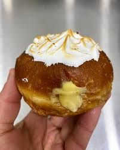
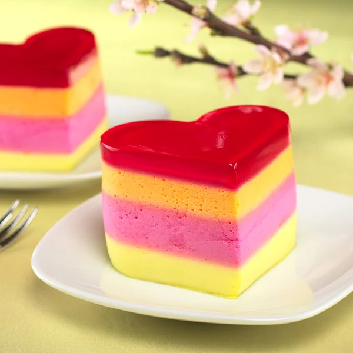
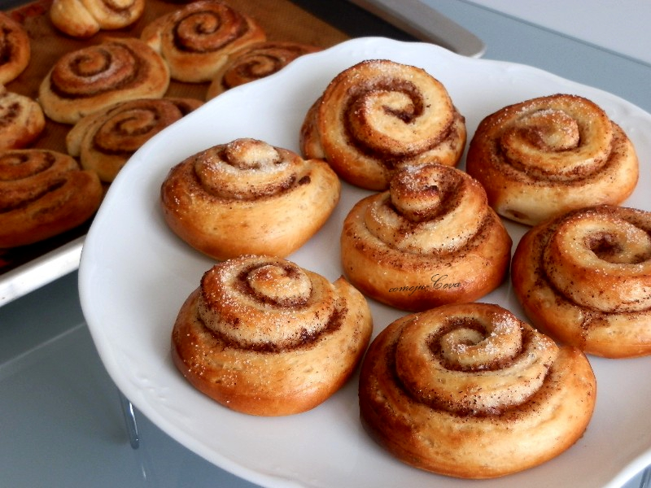
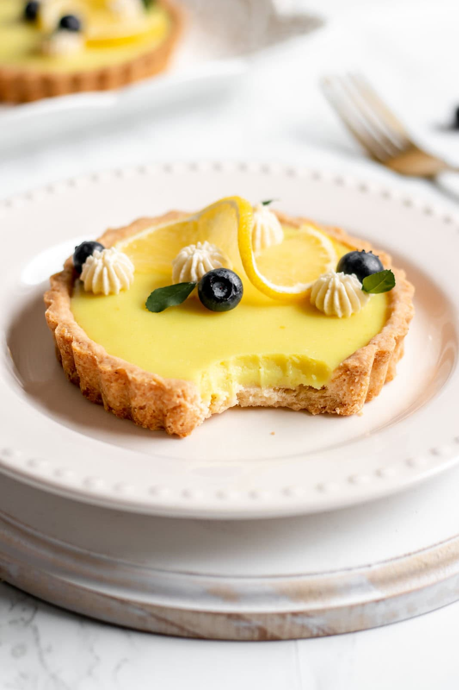
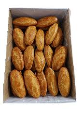
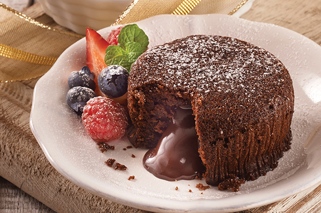

Pastelería artesanal
En Migas Amigas, cada bollo está hecho con pasión y los mejores ingredientes.
Bollo Limeño
Un bollo esponjoso de la costa peruana, con un toque de azúcar moreno y canela, ideal para acompañar el café.
Tartita Peruana
Deliciosa tartita de masa quebrada con crema pastelera, acompañada de un toque de fruta fresca.
Bollo de Canela
Un bollo suave y aromático, con un delicado sabor a canela, ideal para el desayuno o la merienda.
Bollo de Mantequilla
Suave y esponjoso, con un toque de mantequilla que lo hace irresistible para cualquier ocasión.

Tartita Amarilla
Una tarta típica peruana con una capa de crema de leche y un toque de maracuyá que la hace única.
Bollo de Coco
Este bollo tiene un delicado sabor a coco y es perfecto para quienes buscan algo dulce y ligero.

Bollo de Miel
Un bollo con un toque dulce de miel que se derrite en la boca, ideal para acompañar con té.
Tartita de Chocolate
Una rica tartita con una base de chocolate y un suave relleno, perfecta para los amantes del cacao.
